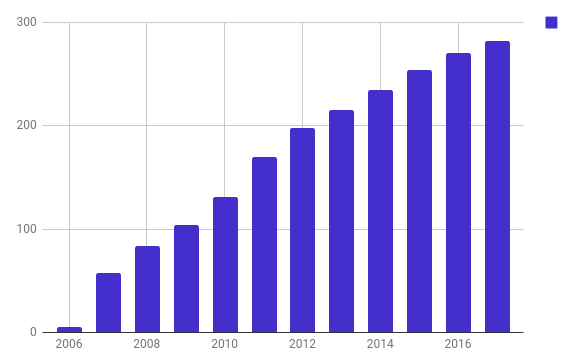

https://radiocut.fm
Guillermo Narvaja (@gnarvaja)
2004
"SAP for book shops and publishers"
Born fuck-up
Hyper optimistic estimation
One year for the MVP
Low price for early adopters
Within a week of running out of money
30 months later: the things started to work

Hard decision
Drop a business branch
-25% revenues
Radical change in my life
Finally, higher profits
Scalability & Profit
From a founder perspective
Happy ending
Still running
Half-acquisition
Freedom
Thanks!